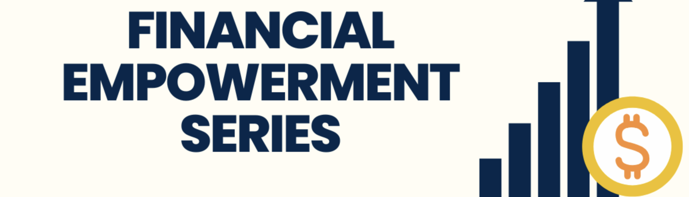

Welcome to CEW+
At CEW+, we navigate circumstantial barriers by providing academic, financial, and professional support to help you reach your personal potential. Established to support women through higher education, we lift up women and all underserved communities at U-M and beyond. Through career and education counseling, funding, workshops, events, and a diverse, welcoming community, we exist to empower. We are CEW+, and we are here to help you reach your potential. For more information please visit: CEW+
Services
CEW+ offers a wide range of services to help students suceed. Some of their popular services include:
- Funding
- Career counselling
- Advocacy Initiative
Funding
At CEW+, they work to break down barriers and increase access through
funding. We offer opportunities for scholarships, emergency grants,
sponsorships, and more for a range of situations and life
circumstances. Check out these resources:
Graduation Grant Program
Career Counselling
CEW's professionally trained and experienced counselors work within a
developmental framework to help individuals consider their options,
make informed choices, and both define and resolve problems, while
focusing on issues of achieving their career goals and balance between
school, work, and family. To get in touch, fill out this
online form.
to learn more.
Advocacy Initiative
Through a variety of initiatives, task forces, groups, and organizations, CEW includes, lifts up, and amplifies diverse voices. Leading initiave offered is: Financial Empowerment Initiative 
Make an Appointment
Give us a call at 734-764-6360, or send us an email at cew.appts@umich.edu to schedule.